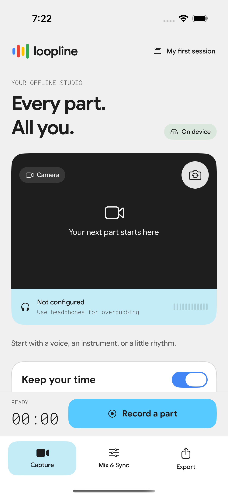
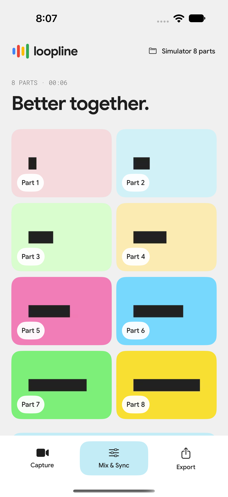
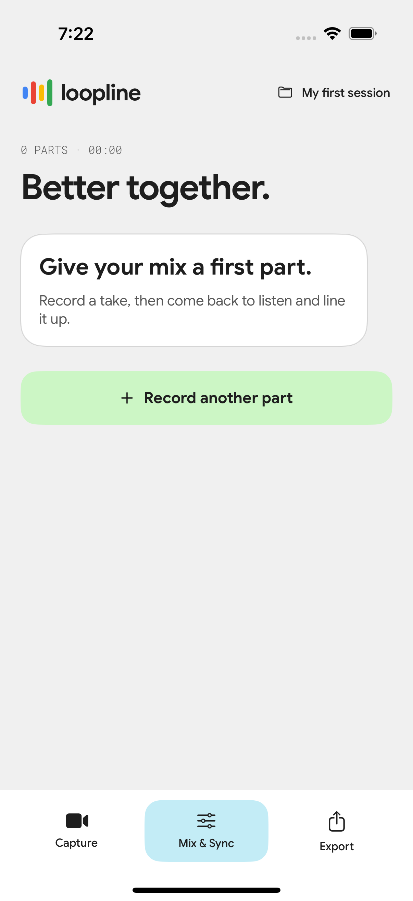
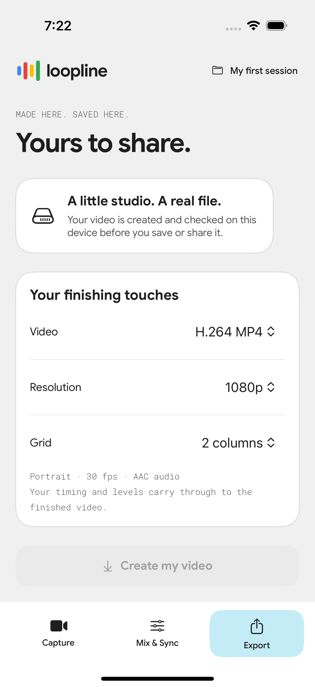

Loopline es un estudio de grabación multipista de video y audio 100% offline para iPhone. Graba arreglos vocales o instrumentales en capas con metrónomo y monitoreo por audífonos, alinea tus tomas con Sync Assist y exporta videos en cuadrícula en H.264 o HEVC hasta en 4K.

Graba tu primera parte con conteo previo y metrónomo opcional, y añade nuevas voces o instrumentos escuchando las partes anteriores por audífonos.
Ajusta volumen, mute, solo y compensación temporal en milisegundos por pista, o aplica recomendaciones automáticas de Sync Assist con opción de deshacer.
Previsualiza exactamente la misma composición que vas a exportar, con ondas de audio reales, miniaturas por toma y recuperación segura de borradores.
Renderiza a 30 fps en H.264 MP4 o HEVC MP4/MOV en 720p, 1080p o 4K. Guarda en Archivos, Fotos o comparte directamente sin subir nada a la nube.


